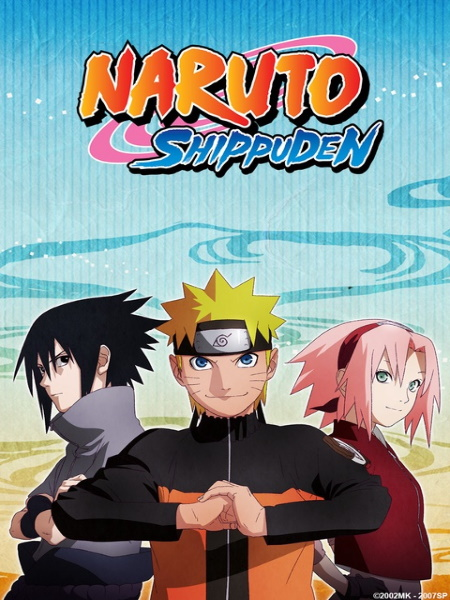
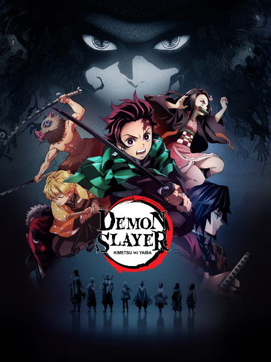

Naruto
Guiado por el espíritu demoníaco que hay en él, el huerfano Naruto aprende a controlar sus poderes como un ninja en esta serie de anime de aventuras.
MyAnimeList: 7.98
Naruto Shippuden

Tras capacitarse en el extranjero por más de dos años, Naruto Uzumaki regresa a casa y une fuerzas con Sakura Haruno para combartir a una organización maligna.
MyAnimeList: 8.25
Berserk (1997)
Un mercenario espadachín errante se une a un líder carismático en su despiadada búsqueda de gloria y reconocimiento en esta épica historia medieval.
MyAnimeList: 8.56
Donde ver:

A.I.C.O. Incarnation
Establecido en el futuro cercano en Japón, año 2035. Un incidente importante fue conocido como 'Estallido', que fue causado por la investigación de la vida artificial.
Una cierta IA llamada 'Materia' ha erosionado la Garganta de Kurobe. Entrar a la ciudad de la investigación, que ha sido llamada como la última esperanza de la humanidad,
ha sido prohibida por el gobierno. Dos años más tarde, una estudiante de transferencia llamada Yuuya Kanzaki le dijo a Aiko Tachibana, una niña de 15 años que perdió a su
familia por el incidente, que Aiko no sabía nada acerca de un secreto escondido dentro de su cuerpo. Se dice que la clave para resolver el misterio está en el Punto primario,
el centro de Ráfaga. Cuando un niño y una niña, que tiene el futuro de la humanidad, se encuentran, ¿cuál será la nueva verdad?.
MyAnimeList: 6.54
Donde ver:
Demon Slayer

Tanjiro emprende un viaje arriesgado para buscar una cura a la maldicion de su hermana y vengar a su familia.
MyAnimeList: 8.51